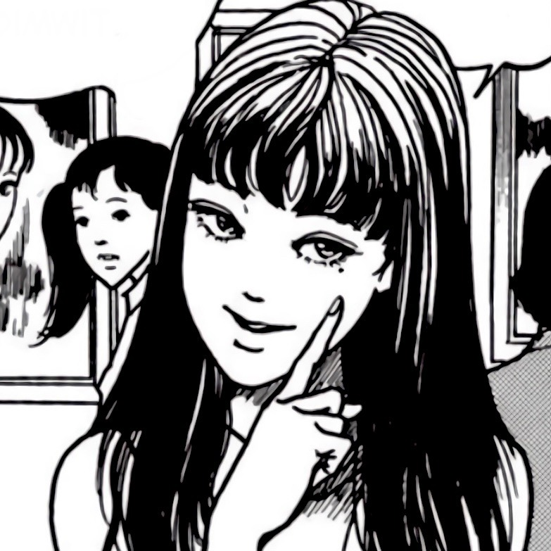

Ejercicio número 2
1) Una foto que te guste mucho.
Es una foto de tomie, me gusta el personaje que corresponde a un manga de Junji Ito
2) Una sección con una breve biografía tuya.

Mi nombre es Luis Enrique Sánchez Pérez, tengo 26 años, me gusta el arroz chino, tambien me gusta jugar videojuegos y escuchar musica, le tengo miedo a los canguros, esa foto es del domingo pasado
3) Una sección donde hables de tu mayor logro (académico, profesional, personal).
No sé cual haya sido mi mayor logro, pero yo pensaria que fue el día en el que por fin conseguí mi titulo
4) Una sección con una lista desordenada con 6 de tus bebidas favoritas.
- Café
- Arizona
- Té
- Agua de Horchata
- Agua de Avena
- Agua de Frutas
5) Una sección de tu música favorita con una lista ordenada con tu top 5 de canciones favoritas del momento. Cada elemento de la lista debe tener un hipervínculo que dirija a la canción en Youtube.
6) Crea una lista descriptiva, donde expliques los siguientes términos: función, let, const y tres etiquetas de html que no hayamos visto en sesión.
- Función
- Un conjunto de instrucciones que realiza una tarea o calcula un valor.
- let
- Declara una variable de alcance local con ámbito de bloque(blockscope), la cual, opcionalmente, puede ser inicializada con algún valor.
- const
- Similar a let solo que con la particularidad de que el valor de una constante no puede cambiarse a través de la reasignación.
- dl
- Es la etiqueta de apertura y cierre que indica que dentro viene una lista descriptiva.
- nav
- Representa una sección de una página cuyo propósito es proporcionar enlaces de navegación, ya sea dentro del documento actual o a otros documentos.
- main
- El elemento HTML main representa el contenido principal del body de un documento o aplicación.
7) Crea una lista anidada, sobre el tema que quieras
- Papas
- Sabritas
- Sabritas de Sal
- Sabritas de Limon
- Ruffles de Queso
- Chips
- Chips Fuego
- Chips de Jalapeño
- Chips de Sal
- Del Sol
- Limón
- Sal
- Queso
- Cheetos
- Sabritas
- Cheetos Naranjas
- Cheetos Verdes
- Cheetos Flamin hot
- Barcel
- Watz
- Del Sol
- Solchesito Dedo Queso
- Solchesito Extremo
- Solchesito Bolita Queso
- Chicharrones
- Sabritas
- Sabritones
- Chicharrón de cerdo
- Barcel
- Valentones
- Spirrones
- Del Sol
- Tubirrones
- Chicharrones de cerdo
Todos los días de la semana contamos con increibles promociones
| Lista de frituras | ||||||||
|---|---|---|---|---|---|---|---|---|
| Frituras mas famosas de cada marca | ||||||||
| Sabritas | Papas de limon | 17 pesos | Barcel | Chips Fuego | 16 pesos | Del sol | Limón | 13 pesos |
| Sabritas de Sal | 17 pesos | Chips Jalapeño | 16 pesos | Queso | 13 pesos | |||
| Ruffles | 17 pesos | Chips Adobadas | 16 pesos | Habanero | 13 pesos | |||